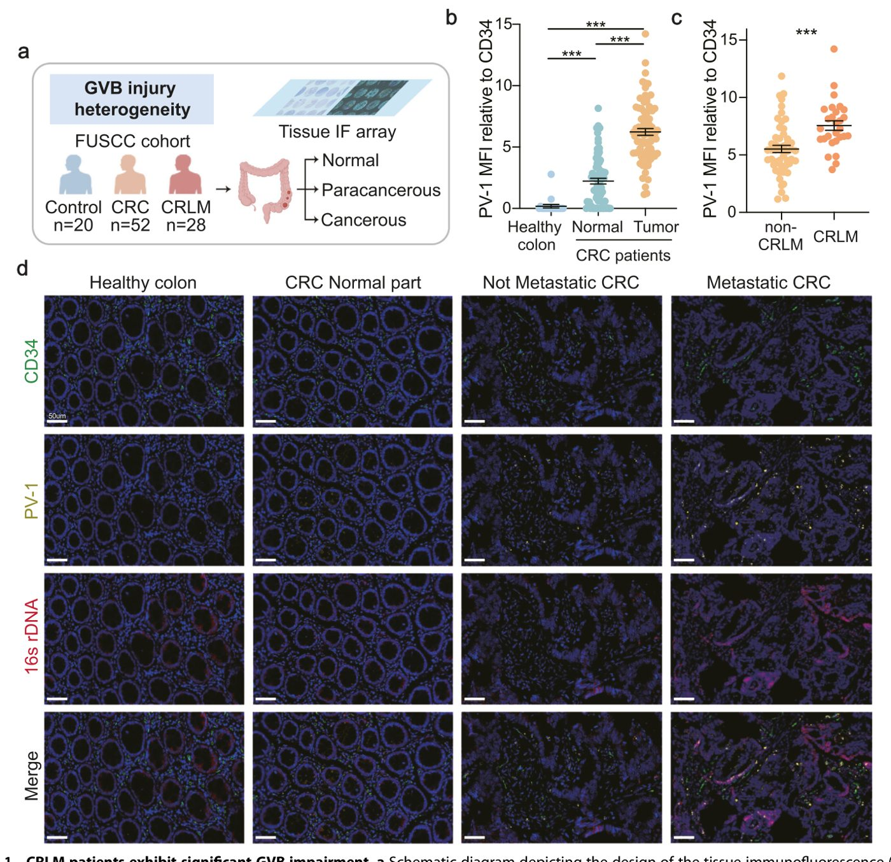
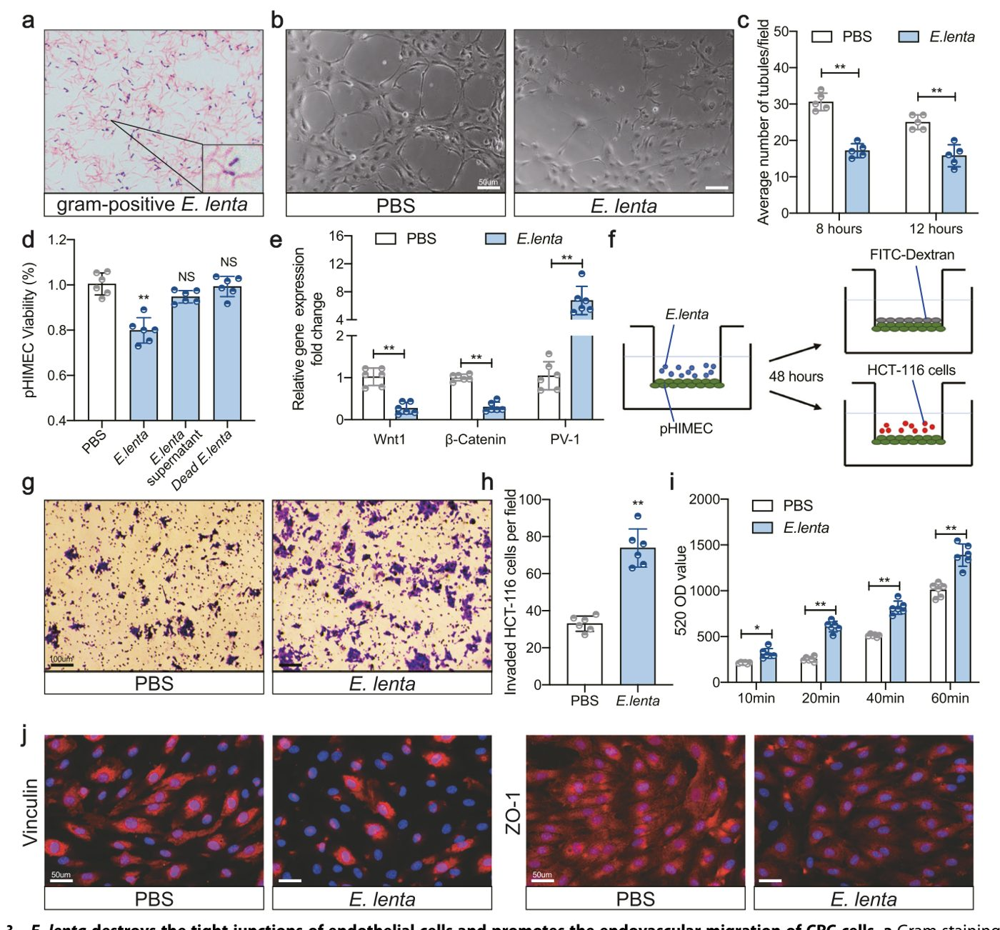
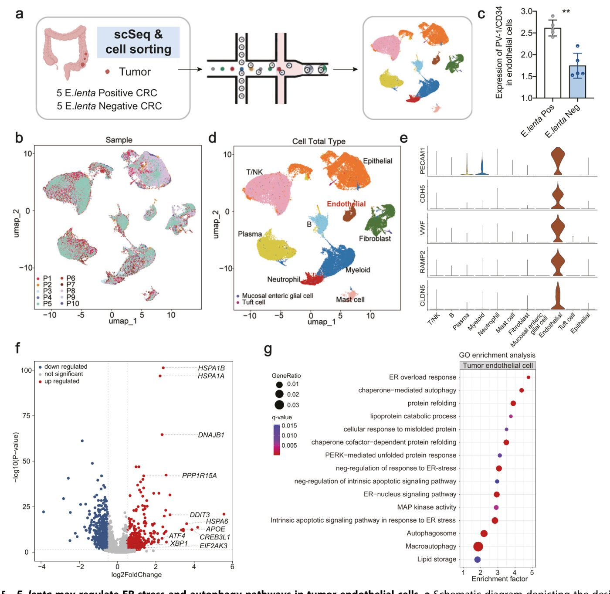

Ішектегі бактерия тоқ ішек қатерлі ісігінің бауырға метастаз беруіне ықпал етеді


Тоқ ішек қатерлі ісігі жиі бауырға метастаз береді және қан тамырлар жүйесін тасымалдаушы ретінде пайдаланады. Зерттеушілер Eggerthella lenta бактериясы ішек тамырларының қорғаныш тосқауылын зақымдайтынын анықтады. Бұл ісік жасушаларының қанға өтуін және ағза бойынша таралуын жеңілдетеді. Бұл механизмді түсіну метастаздарды бақылаудың жаңа жолдарын ашады.
Басты ойлар
- Eggerthella lenta эндоплазмалық ретикулум стрессін белсендіріп, ішек қан тамырлары тосқауылын бұзады.
- E. lenta-ның жоғары концентрациясы метастаз қаупімен және қатерлі ісіктің ерте қайталануымен байланысты.
- PERK жолын басу эндотелийдің тығыз байланыстарын сақтап, ісіктің таралуын баяулатады.
Толығырақ
Зерттеушілер тоқ ішек обырымен ауыратын 147 науқас пен сау еріктілердің тіндеріне талдау жасады. Бауырға метастаз берген науқастарда ішек қан тамырлары тосқауылының (GVB) зақымдану маркері — PV-1 ақуызының деңгейі айтарлықтай жоғары екені белгілі болды. Метагеномдық талдау дәл осы тіндерде Eggerthella lenta бактериясының белсенді көбейетінін көрсетті.
Жасуша дақылдары мен тышқандардағы тәжірибелерде E. lenta-ның қан тамырларының эндотелий жасушаларына жабысатыны анықталды. Бұл TLR4-тәуелді жол арқылы эндоплазмалық ретикулум (ЭР) стрессін белсендіреді және жасушааралық тығыз байланыстардың бұзылуына әкеледі. Нәтижесінде тосқауыл ісік жасушалары үшін өткізгіш болып қалады. ЭР стрессінің негізгі буыны болып табылатын PERK ақуызын басу қан тамыр қабырғасының тұтастығын қалпына келтіруге және қатерлі ісік жасушаларының көшуін азайтуға көмектеседі.
Шектеулер
Зерттеу клиникалық деректердің корреляциялық талдауы мен тышқан модельдеріне негізделген, сондықтан терапияның тиімділігін растау үшін клиникалық сынақтар қажет.
Мақаланың толық аудармасы
Түйіндеме
Алыс метастаздану — колоректальды қатерлі ісіктің (КҚІ) өлімге әкелетін басты себебі, ал ішек тамырлы тосқауылы (GVB) гематогенді таралудың алғашқы кедергісі болып табылады. GVB функциясына метастазданумен байланысты бактериялар тікелей әсер ететінін анықтау үшін біз 20 сау бақылау тобын, 82 метастазы жоқ КҚІ пациентін және бауыр немесе өкпе метастазы бар 65 пациентті қамтитын екі когортаны талдадық. GVB бұзылуы мен метастаздануға байланысты ішек микробтарын зерттеу үшін мультиомикалық тәсілдер (метагеномдық секвенирлеу және бір жасушалы РНК секвенирлеуі) және гнотобиотикалық тышқан модельдері қолданылды. Бауыр метастазы бар КҚІ пациенттерінде GVB бұзылуы және метастаз орындарында бактериялық колонизация байқалды. Eggerthella lenta бактериясы GVB зақымдану маркері болып табылатын плазмалеммалық везикуламен байланысты 1-ақуыздың (PV-1) жоғары экспрессиясы бар пациенттерде көбейгені және оның мөлшері метастаздану мен рецидивпен корреляцияланатыны анықталды.
Маңызды
Eggerthella lenta GVB зақымдануымен (PV-1 маркері) және КҚІ метастаздануымен байланысты, бұл 167 адамнан тұратын когортада және гнотобиотикалық тышқан модельдерінде расталды.
In vitro және in vivo тәжірибелерінде E. lenta эндотелиальды тығыз байланыстар мен GVB тұтастығын бұзып, КҚІ жасушаларының миграциясын және бауырға метастаздануын күшейтті. Механистік тұрғыдан E. lenta эндотелиальды жасушаларға жабысып, TLR4-ке тәуелді жол арқылы эндоплазмалық ретикулум (ЭР) стрессін белсендірді, бұл аутофагия мен апоптозды ынталандырды. PERK нокауты ЭР стрессін бәсеңдетіп, аутофагия мен апоптоздың алдын алды және E. lenta тудырған ZO-1 мен Claudin-5 экспрессиясын төмендетті. Бұл нәтижелер E. lenta-мен байланысты КҚІ метастазын емдеуде микробиотаға бағытталған стратегиялар мен PERK тежелуінің клиникалық әлеуетін көрсетеді.
Колоректальды қатерлі ісік (КҚІ) бүкіл әлемде қатерлі ісікке байланысты өлімнің басты себептерінің бірі болып қала береді, ал метастаздану — жағымсыз болжамның негізгі факторы. Бауыр — КҚІ кезіндегі алыс метастазданудың ең жиі және маңызды орны, сондықтан бауырға диссеминацияны тудыратын механизмдерді түсіну басым міндет болып табылады. Метастаздану — күрделі, көп сатылы процесс, ал ісік жасушаларының қан тамырларының эндотелиальды қабаты арқылы қан ағымына өтуі (интравазация) маңызды алғашқы кезең болып табылады. Соңғы жылдары ішек эпителийінің астында орналасқан мамандандырылған эндотелиальды тосқауыл — ішек тамырлы тосқауылы (GVB) шешуші «қақпашы» ретінде анықталды. Ол ішек қуысы мен қан ағымы арасындағы заттар мен жасушалар алмасуын реттеп, бастапқы ісіктен метастаздың таралуы үшін шешуші бақылау пункті қызметін атқарады.
GVB тұтастығы патологиялық транслокацияның алдын алу үшін өте маңызды. Плазмалеммалық везикуламен байланысты 1-ақуыздың (PV-1) экспрессиясының артуымен сипатталатын GVB бұзылуы қан тамырларының өткізгіштігін арттырады. Бұл ақау ісік жасушаларының порталды қан ағымына өтуін жеңілдетумен қатар, метастатикалық нишаны қалыптастыруға да қатысады. Ангиогенезге қарсы терапия емдеу стратегиясының негізі болғанымен, оның парадоксальды әсерлері — соның ішінде ісіктің инвазивтілігі мен химиялық төзімділігін арттыратын гипоксиялық, қабыну микроортасын ынталандыру — баламалы емдеу әдістерінің қажеттілігін көрсетеді. Жаңа деректер ісік тамырларын қалыпқа келтіру және, атап айтқанда, GVB тұтастығын қалпына келтіру метастаздануды, әсіресе бауырға метастаздануды басуда қазіргі емдеу әдістерінен тиімдірек болуы мүмкін екенін көрсетеді.
Түсіндірме
GVB — ішектен қанға заттардың өтуін бақылайтын эндотелиальды жасушалар тосқауылы; оның зақымдануы (PV-1 маркері) метастаздануға жол ашады.
GVB-мен тікелей байланыста болатын ішек микробиотасы GVB функциясының негізгі модуляторы болып табылады. Микробиотаның ішек тамырларын қайта құрудағы және қызметіндегі рөлі жақсы зерттелген. Атап айтқанда, арнайы патогенді бактериялар GVB тұтастығын тікелей бұза алады. Мысалы, Salmonella typhimurium эндотелиальды Wnt/β-catenin сигналдық жолына араласып, GVB-ны бұза алады және бактериялардың бауырға таралуын ынталандырады. Ең маңыздысы, жақында жүргізілген зерттеу GVB зақымдануын тудыратын, бактериялардың бауырға транслокациясын жеңілдететін және көбейіп жатқан қатерлі ісік жасушаларымен бірге орналасқан бауыр метастаздарында жинақталатын про-инвазивті Escherichia coli штаммын (C17) анықтады. Бұл нәтижелер арнайы микробтық агент, GVB бұзылуы және КҚІ бауыр метастазы (CRLM) арасындағы тікелей байланысты орнатады.
Осы жетістіктерге қарамастан, ішек микробиотасының КҚІ метастазына, әсіресе бауырға әсер ету үшін GVB тұтастығын қалай реттейтінінің механизмдері әлі де толық анықталмаған. GVB зақымдануына жауапты негізгі патогенді бактерияларды анықтау және олардың канцерогендік механизмдерін егжей-тегжейлі түсіну осы саладағы маңызды олқылықтар болып табылады. Сондықтан, бұл зерттеу GVB бұзылуымен байланысты негізгі ішек микробтарын скринингтеуге және сипаттауға, сондай-ақ олардың КҚІ бауыр метастазын тудырудағы нақты рөлдері мен механизмдерін анықтауға бағытталған.
Тоқ ішек тамырларындағы GVB күйін зерттеу үшін біз CRC-мен ауыратын науқастардан (алыс метастаздары бар немесе жоқ, n = 80) және Фудань университетінің Шанхай онкологиялық орталығының (FUSCC) оқу когортасындағы сау субъектілерден (n = 20) диагноз қойылған кезде алынған формалинмен бекітілген және парафинмен қапталған (FFPE) тоқ ішек резекциясы үлгілеріне ретроспективті талдау (орташа бақылау мерзімі 2,1 жыл) жүргіздік (1-сурет; Кесте SN). Біріншіден, біз спецификалық емес бояу реакцияларын алып тастағаннан кейін, эндотелий жасушаларындағы PV-1-дің орташа флуоресценция қарқындылығы (MFI) (CD34-ке қатысты) CRC-мен ауыратын науқастарда сау бақылау үлгілеріне қарағанда жоғары екенін байқадық. Айта кету керек, PV-1 деңгейі CRC-мен ауыратын науқастардың қатерлі емес тіндерінде де сау бақылау тіндеріне қарағанда жоғары болды, бұл GVB тек ісік тінінің ішінде ғана емес, сонымен қатар іргелес сау шырышты қабықта да өзгергенін көрсетеді (1b, d-сурет).
Маңызды
GVB бұзылуының маркері болып табылатын PV-1 деңгейі CRC-мен ауыратын науқастардың тамырларында, әсіресе бауыр метастаздары (CRLM) болған кезде айтарлықтай жоғарылайды.
CRC-мен ауыратын науқастарда PV-1 деңгейінің жоғары болуы алыс метастаздармен корреляцияланатынын бағалау үшін біз CRC-мен ауыратын науқастардың үлгілерін бауыр метастаздары дамыған (n = 28) және дамымаған (n = 52) топтарға бөлдік. Бұл талдау метастазы жоқ науқастармен салыстырғанда, CRLM-мен ауыратын науқастарда PV-1 деңгейі жоғары екенін көрсетті (1c, d-сурет), бұл CRLM-мен ауыратын науқастарда GVB бұзылуы болуы мүмкін екенін көрсетеді. Bertocchi және басқалары хабарлаған, E. coli тудыратын GVB бұзылуы CRC-нің бауырға метастаздануына ықпал ететінін және PV-1 экспрессиясының жоғарылауы алыс қайталанумен байланысты екенін көрсететін алдыңғы нәтижелерге сәйкес, біздің деректер Eggerthella lenta-мен байытылған науқастарда да ұқсас бақылауларды көрсетті (1a–d-сурет). Әртүрлі бактериялық түрлер бойынша бұл сәйкес нәтижелер GVB бұзылуының CRC метастазындағы жалпы патогендік механизм ретіндегі кеңірек маңыздылығын көрсетеді.
Түсіндірме
GVB (ішек-тамыр тосқауылы) — бактериялар мен токсиндердің қан ағымына өтуіне жол бермейтін ішек пен қан тамырлары жүйесі арасындағы тосқауыл; PV-1 — эндотелий фенестралары диафрагмаларының құрылымдық компоненті болып табылатын ақуыз, оның көбеюі осы тосқауылдың тұтастығының бұзылғанын білдіреді.
Ішекте тіршілік ететін E. lenta бактериясы GVB зақымдануымен, ісіктің метастаздануымен және қайталануымен байланысты. Микробиоманың GVB зақымдануындағы рөлін жақсырақ түсіну үшін PV-1 және CD34 маркерлеріне конфокальды микроскопия көмегімен 16S rDNA бояуы жасалды. Метастазсыз тоқ ішек обырымен (ТІО) ауыратын науқастармен салыстырғанда, бауырға метастаз берген (CRLM) науқастардың ісік тіндері бактериялармен қарқындырақ колонизацияланған және бұл PV-1 деңгейінің жоғарылауымен қатар жүрді (1d-сурет). Әрі қарай біз науқастарды PV-1-дің CD34-ке қатысты медианалық деңгейіне сәйкес «PV-1 high» (n = 40) және «PV-1 low» (n = 40) топтарына бөлдік және GVB зақымдануының жеңіл және ауыр дәрежелері бар науқастардағы ішек микробиотасының таксономиясын сипаттау мақсатында нәжіс үлгілерінің метагеномдық тізбегін талдадық (2a-сурет). Бір айнымалылы талдаулар PV-1 мәртебесінің ісік түйіндері метастазының (TNM) сатысымен, тамыр инвазиясымен, өмір сүру ұзақтығымен және қайталанумен айтарлықтай байланысты екенін көрсетті (S2-кесте). Бұл корреляциялар шатастырушы айнымалыларға (жасы, BMI және жынысы) түзету енгізілгеннен кейін де маңызды болып қалды.
Маңызды
PV-1-дің жоғары деңгейі GVB-дің ауыр зақымдануымен, тамыр инвазиясымен және нашар болжаммен корреляцияланады, бұл метагеномдық талдаумен расталады.
«PV-1 low» тобымен салыстырғанда, нәжіс альфа-әртүрлілігінің Chao1 бағалаулары «PV-1 high» тобында айтарлықтай жоғары болды (FDR = 0.0083, t-тест) (2b-сурет; S3-кесте). Біз кейіннен PV-1 экспрессиясының әртүрлі деңгейлері бар үлгілерде бар таксондарды анықтау үшін Уилкоксон тесттерін қолдана отырып, дифференциалды молшылық талдауын өткіздік. Түрлер деңгейінде E. lenta және Desulfovibrio туыстас түрлері (Desulfovibrio vulgaris, Desulfovibrio desulfuricans, Desulfovibrio fairfieldensis және т.б.) «PV-1 high» тобында көбірек кездесті, бұл аталған түрлердің ТІО-дағы GVB зақымдалған белсенді микроортамен оң байланысын көрсетеді (2c-сурет; S4-кесте). Бұл түрлердің ішінде E. lenta-ның салыстырмалы молшылығы «PV-1 high» тобында ең жоғары болды және «PV-1 low» тобымен салыстырғанда ең айтарлықтай айырмашылықпен ерекшеленді (S4 және S5-кестелер). Корреляциялық талдау сонымен қатар нәжістегі E. lenta молшылығының ісік тамырларындағы PV-1 экспрессиясымен айтарлықтай оң корреляцияланатынын анықтады (r = 0.2688; P = 0.0159; 2d-сурет; 10 негізгі түрдің салыстырмалы молшылығы мен PV-1 арасындағы корреляциялар S6-кестеде көрсетілген).
Түсіндірме
GVB (Gut-Vascular Barrier) — ішек-тамыр тосқауылы, бактериялардың ішектен қан ағымына өтуіне жол бермейтін құрылым; оның зақымдануы жүйелі қабынуға және метастазға ықпал етеді.
Осылайша, біз E. lenta-ның GVB зақымдануына қатысуы мүмкін деп болжадық және кейінгі растаушы тәжірибелерді өткіздік. E. lenta-ның ісіктің өршуімен байланысын анықтау үшін біз әртүрлі TNM сатысындағы науқастар арасында E. lenta-ның салыстырмалы молшылығын салыстырдық. Күтілгендей, E. lenta аурудың ілгері сатыларындағы (TNM III/IV сатылары, әсіресе бауырға метастаз берген IV сатыдағы науқастар) науқастарда бастапқы сатылардағы (TNM I/II сатылары) науқастарға қарағанда айтарлықтай байытылған еді (2e-сурет). E. lenta-ның салыстырмалы молшылығының медианасына сәйкес, біз науқастарды «E. lenta high» (n = 40) және «E. lenta low» (n = 40) топтарына бөлдік (S7-кесте). Айта кетерлігі, «E. lenta low» тобымен салыстырғанда, оң тамыр инвазиясы бар науқастардың үлесі «E. lenta high» тобында айтарлықтай жоғары болды (2f-сурет). E. lenta инфекциясының науқастың клиникалық жағдайына әсерін бағалау үшін біз E. lenta молшылығының артуы ерте қайталанумен және жалпы өмір сүру ұзақтығымен байланысты екенін бағаладық (2g, h-сурет). Каплан-Мейер қисықтары E. lenta-ның жоғары молшылығы ерте қайталанудың жоғары деңгейімен айтарлықтай байланысты екенін көрсетті (P = 0.0326). Жалпы өмір сүру ұзақтығы тұрғысынан E. lenta инфекциясы нашар болжамға әкелді, дегенмен топтар арасындағы айырмашылық статистикалық тұрғыдан маңызды болмады (P = 0.172). ТІО тіндеріндегі E. lenta инфекциясын, сондай-ақ PV-1 және CD34 экспрессиясын анықтау үшін флуоресцентті in situ гибридизациясы (FISH) қолданылды (FUSCC когортасы). 2i-суретте көрсетілгендей, E. lenta-ның ТІО тіндеріне енетіні және жиі PV-1-дің шамадан тыс экспрессиясымен қатар жүретіні анықталды. Жалпы алғанда, біздің нәтижелеріміз ішекте тіршілік ететін E. lenta бактериясының GVB зақымдануымен, ісіктің метастаздануымен және қайталануымен байланысты екенін көрсетеді.
Бауырға және өкпеге метастаз берген науқастарда E. lenta-ның таралуында айырмашылық бар-жоғын анықтау үшін біз FUSCC-тен 30 метастазсыз ТІО науқастарын, 20 бауырға метастаз берген ТІО науқастарын және 17 өкпеге метастаз берген ТІО науқастарын қамтитын тәуелсіз когортаны қоса отырып, растаушы тәжірибелерімізді кеңейттік (S1a-сурет; демографиялық мәліметтер S1-кестеде келтірілген). Бастапқы ісік тіндерінің 16S rRNA тізбегі және IF бірлескен локализация талдауы арқылы біз метастазсыз бақылау топтарымен салыстырғанда, бауырға және өкпеге метастаз берген ТІО топтарының екеуі де E. lenta, тамыр эндотелиальды PV-1 экспрессиясы және ATF4 белсендірілуінің айтарлықтай жоғары деңгейлерін көрсеткенін дәлелдедік (6-суреттегі нәтижелерге сәйкес) (S1b–e-суреттер). Айта кетерлігі, бауыр және өкпе метастаздарының кіші топтары арасында айтарлықтай айырмашылықтар байқалмады (барлық параметрлер үшін P > 0.05).
Абайлаңыз
Зерттеу науқастардың клиникалық үлгілерінде жүргізілген, бұл корреляцияны көрсетеді, бірақ E. lenta мен метастаз арасындағы тікелей себеп-салдарлық байланысты дәлелдемейді.
Медианаға негізделген стратификацияны қолдана отырып, біз бүкіл когортаны жоғары және төмен E. lenta молшылығы топтарына (n = 33-ке қарсы 34) және жоғары және төмен PV-1 экспрессиясы топтарына (n = 33-ке қарсы 34) бөлдік. χ² талдауы метастатикалық органотропизм (бауыр мен өкпе) және E. lenta молшылығы (P = 0.9421) немесе PV-1 экспрессия деңгейі (P = 0.9689) арасында айтарлықтай байланысты анықтамады. Маңыздысы, біз бүкіл растаушы когорта бойынша E. lenta молшылығы мен тамырлық PV-1 экспрессиясы арасында айтарлықтай оң корреляцияны анықтадық (S1f-сурет, Пирсон r = 0.2631, P = 0.0315). Сонымен қатар, төмен E. lenta колонизациясы бар науқастармен салыстырғанда, жоғары E. lenta колонизациясы бар науқастар айтарлықтай жоғары ATF4 экспрессиясын көрсетті (χ² тесті бойынша P = 0.0004). Бұл кешенді растаушы нәтижелер органға тән метастазға бейімділікке қатысты ықтимал алаңдаушылықтарды жоя отырып, бастапқы нәтижелеріміздің сенімділігін нығайтады.
Әрі қарай, біз GVB өткізгіштігін және ТІҚ жасушаларының in vitro эндоваскулярлық миграциясын бақылаудағы қатысын растау үшін анаэробты грам-оң E. lenta стандартты штаммын (ATCC, #25559; 3a-сурет) сатып алдық. Ішектің микротамырлы эндотелиальді жасушалары (pHIMEC) E. lenta-мен бірге өсірілгенде, күтілгендей, E. lenta қосу 8 сағат және 12 сағатта түтікшелер санын азайтты (3b, c-сурет). Біз E. lenta-ның өзі немесе оның бөлінген өнімдері pHIMEC тіршілік қабілетіне әсер ететінін қосымша зерттедік. 3d-суретте көрсетілгендей, тірі E. lenta әсерінен pHIMEC тіршілік қабілетінің төмендеуі байқалды, ал қызумен өлтірілген E. lenta және E. lenta супернатантымен өңдеу айтарлықтай тежегіш әсер көрсетпеді.
Маңызды
E. lenta эндотелиальді жасушалардың тіршілік қабілетін төмендетеді және түтікшелердің түзілуін бұзады, бұл әсер тірі бактериялардың болуына байланысты.
Бактерия мен иесі арасындағы өзара әрекеттесуге келетін болсақ, патогеннің иесі жасушаларына жабысуы (адгезия) көбінесе тірі бактериялар арқылы иесін реттеудің бірінші кезеңі болып табылады. Содан кейін біз анаэробты жағдайда Transwell планшеттерінде E. lenta және бақылау E. coli DH5α штаммының pHIMEC-ке жабысу қабілетін өлшедік. E. lenta pHIMEC-ке жоғары адгезия қабілетін көрсетті (1:10 сұйылтуда бактериялық жасушалардың 81,2% адгезиясы), ал DH5α бұл жасушаларға төмен адгезия қабілетін көрсетті (1:10 сұйылтуда бактериялық жасушалардың тек 9,7% ғана байланысқан күйде қалды). E. lenta адгезиясының патологиялық маңыздылығын нақтырақ зерттеу үшін біз сканерлеуші электронды микроскопия (СЭМ) көмегімен бактериялық адгезияны жүйелі түрде тексердік. E. lenta pHIMEC-пен (1:10 және 1:100 сұйылту; 3 тәуелсіз биологиялық қайталау) 4 сағат бойы бірге өсірілді және кескіндеу алдында үлгілер PBS-пен (әрқайсысы 5 минуттан 4 рет) мұқият жуылды. СЭМ E. lenta жасушаларының көп мөлшері эндотелиальді беткейге дозаға байланысты жабысатынын анық көрсетті (S2-сурет). Бұл нәтижелер E. lenta-ның ішек микротамырлы ортасын имитациялайтын жағдайларда эндотелиальді жасушаларға берік және тұрақты жабысатынын тікелей көрсетеді.
Wnt/β-катенин сигналдық жолы эндотелиальді жасушалардың пролиферациясы мен миграциясымен байланысты екені белгілі болғандықтан, pHIMEC-те Wnt1, β-катенин және PV-1 экспрессиясы тексерілді. E. lenta-мен бірге өсіру pHIMEC-те Wnt1 және β-катенин экспрессиясын айтарлықтай төмендетті, ал GVB зақымдануымен байланысты маркер PV-1 экспрессиясы артты (3e-сурет). E. lenta-ның эндотелиальді моноқабат өткізгіштігіне әсерін бағалау үшін қатерлі ісік жасушаларының (HCT-116) транс-эндотелиальді инвазиясы тексерілді (3f-сурет). PBS-пен өңделген pHIMEC-пен салыстырғанда, E. lenta-мен өңделген pHIMEC моноқабаттары арқылы айтарлықтай көп HCT-116 жасушалары миграция жасады (3g, h-сурет). E. lenta-мен өңдегеннен кейін эндотелиальді моноқабат өткізгіштігіндегі өзгерістер, сонымен қатар, FITC-пен белгіленген декстранның pHIMEC моноқабаттары арқылы өтуін өлшеу арқылы анықталды. PBS-пен өңделген жасушалармен салыстырғанда, pHIMEC-ті E. lenta-мен өңдеу флуоресцентті зондтың эндотелиальді қабат арқылы өтуін айтарлықтай арттырды (3i-сурет). IF бояу әдісі E. lenta-мен өңдегеннен кейін, бірақ PBS-пен өңдемегеннен кейін, pHIMEC моноқабаттарында винкулин мен ZO-1 өтуінің айтарлықтай азайғанын анықтады (3j-сурет). Жалпы алғанда, бұл нәтижелер E. lenta-ның эндотелиальді жасушаларға жабысып, олардың тығыз байланыстарын бұза алатынын және ТІҚ жасушаларының эндоваскулярлық миграциясын ынталандыратынын көрсетеді.
Түсіндірме
GVB (Gut-Vascular Barrier) — ішек-тамыр тосқауылы, қан-ми тосқауылына ұқсас құрылым, бактериялар мен токсиндердің ішектен қан ағымына өтуін шектейді.
E. lenta-ның in vivo жағдайында эндотелийлік тосқауылдарға әсерін көрсету үшін біз кең спектрлі антибиотиктермен (Abx) емделген тышқандарға 2 апта бойы тірі E. lenta немесе PBS енгіздік, содан кейін «Материалдар мен әдістер» бөлімінде сипатталғандай 20-аптаға дейін AOM/DSS КРР тышқан модельдері мен бауыр метастазы модельдері жасалды (Сурет 4a). Күтілгендей, ісік моделін жасамас бұрын екі апта бойы E. lenta енгізу тоқ ішектің қан тамыр құрылымын айтарлықтай зақымдады, эндотелийлік PV-1 экспрессиясын арттырды және ZO-1 экспрессиясын төмендетті (Сурет 4b–d). КРР тышқан моделін жасағаннан кейін (20-апта), біз E. lenta енгізілген топтағы тоқ ішек ісіктерінде PBS тобымен салыстырғанда PV-1 экспрессиясының жоғарылағанын және ZO-1 экспрессиясының төмендегенін анықтадық (арнайы емес бояу реакцияларын алып тастағаннан кейін); бұл өзгерістер тіпті алыс метастаз белгілері анықталмай тұрып-ақ орын алды (Сурет 4e–g). Тышқандарға құйрық венасы арқылы FITC-декстран енгізілді және E. lenta-мен емделген тышқандардың ісік тіндерінде FITC-декстранның қатты сызылып шығуы анықталды (Сурет 4h).

Маңызды
E. lenta енгізу эндотелийлік тосқауылды зақымдап, қан тамырларының өткізгіштігін және PV-1 экспрессиясын арттырады, бұл метастаз процесінен бұрын жүреді.
Бір қызығы, E. lenta-мен емдеуден кейін ішек ісіктерінің саны көбейгенімен, бұл өзгеріс статистикалық тұрғыдан маңызды болмады (Сурет SN). Біздің механикалық зерттеулеріміз E. lenta-ның бірінші кезекте ісік жасушаларының көбеюін немесе аман қалуын тікелей реттеуден гөрі, эндоплазмалық ретикулум (ЭР) стресс жолдары арқылы эндотелийлік жасушаларға әсер ететінін көрсетті. Мұны растау үшін біз КРР органоидтарымен бірлескен культивациялау бойынша қосымша тәжірибелер өткіздік. E. lenta әсері (12 сағат бойы 1:1000 инфекция көптігінде (MOI)) органоидтардың өміршеңдігінде (P = 0,89) немесе морфологиялық тұтастығында елеулі өзгерістерге әкелмеді (Сурет SN), бұл E. lenta-ның метастазды қоздырушы әсері ісік жасушаларын тікелей модуляциялаудан гөрі, қан тамыр тосқауылының бұзылуымен байланысты деген гипотезамызды растайды. Содан кейін біз қабыну цитокиндері мен хемокиндер деңгейінің де өзгергенін бағаладық. Нәтижелеріміз E. lenta-мен емдеу тышқандардың тоқ ішек ісіктерінде IL-6, TNF-α және CCL-2 гендері экспрессиясының айтарлықтай артуына әкелгенін көрсетті (Сурет 4i–k).
Түсіндірме
MOI (инфекция көптігі) — мәдениеттегі нысана жасушалар санына қатысты инфекциялық агенттер (бактериялар) санының қатынасы.
E. lenta-мен емдеу ісік метастазын күшейтуі мүмкін екенін анықтау үшін біз ортотопиялық CRLM модельдерін пайдалана отырып, эксперименттік жүйемізді кеңейттік (Сурет 7a). Нәтижелер E. lenta инфекциясы бауыр метастаздары дамыған тышқандар үлесін және метастатикалық ошақтардың жалпы беткей ауданын арттыру арқылы бауырдағы метастатикалық жүктемені айтарлықтай арттырғанын көрсетті (Сурет 7b–e). Қорытындылай келе, нәтижелеріміз E. lenta-ның GVB-ны бұза алатынын және in vivo жағдайында КРР-ның бауырға метастаз беруіне ықпал ететінін көрсетеді.

Абайлаңыз
Зерттеу тышқан модельдерінде жүргізілді; нәтижелерді адамдарға экстраполяциялауда сақтық таныту қажет.
E. lentaning ісік эндотелий жасушалары мен GVB-ге әсерінің реттеуші механизмдерін зерттеу үшін E. lenta-оң колоректальды қатерлі ісік (КҚІ) тіндерінің бес үлгісі мен E. lenta-теріс КҚІ тіндерінің бес үлгісіне бір жасушалы РНҚ секвенирлеуі (scRNA-seq) және жасушаларды сұрыптау жүргізілді (5-сурет a, b). Күтілгендей, ісік қан тамырларындағы PV-1 деңгейлері E. lenta-оң пациенттерде E. lenta-теріс пациенттерге қарағанда айтарлықтай жоғары болды (5-сурет c). Сапасыз жасушалар жойылғаннан кейін («Материалдар мен әдістер» бөлімін қараңыз), биологиялық талдау үшін 97 257 жасуша іріктеліп алынды. Ген экспрессиясы мен негізгі компоненттер талдауын қалыпқа келтіргеннен кейін, біз жасушаларды бөлу үшін графқа негізделген кластерлеуді қолдандық, олар кейіннен маркерлік гендер арқылы 11 белгілі жасушалық желіге бөлінді (5-сурет d, e): эпителий жасушалары (EPCAM маркері), эндотелий жасушалары (PECAM1, CDH5, VWF, RAMP2 және CLDN5 маркерлері), T/NK-жасушалары (CD3D және NKG7 маркерлері), B-жасушалары (MS4A1 және CD79A маркерлері), плазмалық жасушалар (MZB1 маркері), фибробласттар (COL3A1 маркері), нейтрофилдер (FCGR3B маркері), миелоидты жасушалар (LYZ маркері), семіз жасушалар (TPSB2 маркері), шоқ жасушалары (SH2D6 маркері) және шырышты қабық энтерикалық глиальды жасушалары (PLP1 маркері).
Маңызды
97 257 жасушаның scRNA-seq талдауы 11 жасуша түрін анықтады, бұл ретте E. lenta бар пациенттерде ісік қан тамырларында PV-1 деңгейінің айтарлықтай жоғарылауы байқалды. [!tip] scRNA-seq (бір жасушалы РНҚ секвенирлеуі) — әрбір жеке жасушадағы гендердің белсенділігін зерттеуге мүмкіндік беретін әдіс, ол сирек кездесетін жасуша түрлері мен олардың ерекше күйлерін көруге мүмкіндік береді.
Жалпы жасушалардың ген онтологиясы (GO) талдауы E. lenta-оң топта эндотелий жасушаларына тән жолдардың айтарлықтай байығанын көрсетті, соның ішінде «эндотелий жасушаларының активтенуі» (байыту коэффициенті (EF) = 5,0306, FDR = 0,0119), «эндотелий жасушаларының дамуын реттеу» (EF = 3,9061, FDR = 0,0171) және «эндотелий жасушаларының апоптоздық процесін оң реттеу» (EF = 3,228, FDR = 0,0239) (SN-сурет S4a, b және SN-кесте S11). Басқа жасуша түрлерінде, біз E. lenta-оң үлгілерде эпителий жасушалары үлесінің азайғанын байқағанымызбен, бұл ішек тосқауылы мен эндотелий бұзылыстарының жанама әсерін көрсетеді. Әрі қарай, біз екі топтағы пациенттердің эндотелий жасушаларындағы ген экспрессиясындағы айырмашылықтарға назар аудардық. abs(avg_log2FC) > 0,5 және P-мәні < 0,05 шекті мәнімен E. lenta-оң КҚІ тобында бақылау тобымен салыстырғанда 216 дифференциалды экспрессияланған ген (DEG) анықталды (5-сурет f; SN-кесте S8). E. lenta-оң КҚІ тобынан алынған ісік эндотелий жасушаларында жоғары экспрессияланған гендерге қатысты GO биологиялық процестері негізінен ЭТ стрессі мен аутофагияға байланысты болды (5-сурет g; SN-кесте S9). Жалпы алғанда, scRNA-seq нәтижелері E. lenta ісік эндотелий жасушаларында ЭТ стрессі мен аутофагия жолдарын реттей алатынын көрсетті.
ЭТ стрессін қоздыратын патогенді компонент(тер)ті анықтау үшін біз жуылған E. lenta немесе E. lenta мәдениетінің супернатанттарын қолдана отырып емдеу тәжірибелерін өткіздік. SN-сурет S5a-да көрсетілгендей, E. lentaning өзі pHIMEC жасушаларында ЭТ стрессі жауаптарын (p-PERK жоғарылауымен расталған) және аутофагия активтенуін (Beclin-1 өсуі) қоздырды, ал мәдениет супернатанты жеке алғанда минималды әсер етті. Айта кетерлігі, СЭМ (SN-сурет S2) E. lenta мен қан тамыр эндотелий жасушалары арасындағы тікелей физикалық өзара әрекеттесуді растады. Бұл деректер бақыланған әсерді бөлінген метаболиттер емес, беттік компоненттер делдал ететінін көрсетеді. Бактерияларды танудағы TLR4-тің рөлін ескере отырып, біз оның осы процестегі қатысуын арнайы ингибитор TAK-242 көмегімен тексердік. SN-сурет S5b-де көрсетілгендей, TAK-242-мен алдын ала өңдеу E. lenta қоздырған ЭТ стрессі маркерлері (p-PERK және p-eIF2α) мен pHIMEC-тегі аутофагия активтенуі экспрессиясындағы өзгерістерді қайтарды. Маңыздысы, DH5α бақылау бактериялары да, TAK-242 де жеке алғанда айтарлықтай ЭТ стрессі жауаптарын қоздырмады. Бұл селективті тежелу TLR4-тің эндотелий стрессі жауаптарына E. lentaning әсерін делдал ететін негізгі рецептор екенін растайды.
Маңызды
E. lenta беттік ақуыздарының TLR4 рецепторымен өзара әрекеттесуі эндотелий жасушаларында ЭТ стрессі мен аутофагияны тудырады, бұл TAK-242 ингибиторымен блокталды. [!warning] Зерттеу pHIMEC жасушаларында (in vitro) жүргізілді; E. lenta колонизациясы мен адам тіндеріндегі ЭТ стрессі арасындағы байланыс себеп-салдарлық байланысты одан әрі растауды талап етеді.
Осы механикалық қорытындыларды клиникалық тұрғыдан маңызды контекстте одан әрі растау үшін біз E. lenta колонизациясы мәртебесі бойынша жіктелген адам КҚІ тіндеріндегі ЭТ стрессі маркерлерін тексердік. Иммуногистохимиялық бояу E. lenta-теріс тіндермен салыстырғанда, E. lenta-оң КҚІ тіндері BiP және p-eIF2α экспрессиясының айтарлықтай жоғары екенін көрсетті (SN-сурет S6). Бұл нәтижелер E. lenta колонизациясы ісік микроортасында ЭТ стрессінің күшеюімен байланысты екеніне тікелей in vivo дәлелдер ұсынды, бұл біздің in vitro бақылауларымызды растайды және E. lenta-мен байланысты КҚІ метастазындағы TLR4–ЭТ стрессі осінің трансляциялық маңыздылығын нығайтады.
Омикстік талдаудан алынған жоғарыдағы нәтижелер негізінде біз pHIMECs жасушаларындағы эндоплазмалық ретикулум (ЭР) стрессі мен аутофагияға қатысты гендердің ақуыз экспрессиясын талдадық. Вестерн-блот талдауы E. coli DH5α немесе PBS өңдеуімен салыстырғанда, E. lenta әсері pHIMECs жасушаларында BiP, p-PERK, p-eIF2α, ATF4, LC3A/B және Beclin-1 экспрессиясын жоғарылатып, P62, ZO-1 және Claudin-5 экспрессиясын төмендеткенін көрсетті (Сурет 6a). Сонымен қатар, E. lenta әсері pHIMECs жасушаларында апоптозды айтарлықтай қоздырды (Сурет 6b). Электронды микроскопия E. lenta әсерінен кейін pHIMECs жасушаларында аутофагосомалардың түзілгенін анықтады (Сурет 6c). Бұл деректер pHIMECs жасушалары E. lenta бактерияларымен өңделгеннен кейін ЭР стрессі мен аутофагия/апоптоз белсендірілгенін көрсетеді. ЭР стрессі p-PERK киназа белсенділігін арттырып, eIF2α фосфорлануына ықпал ететіні және нәтижесінде ақуыз синтезі мен жасуша өсуінің төмендеуіне әкелетіні белгілі. Біз pHIMECs жасушаларында PERK нокдаунын жасау үшін РНҚ интерференциясын қолдандық және PERK деңгейі төмендетілген pHIMECs жасушаларына E. lenta әсерін қайта бағаладық. Нәтижелер PERK siRNA E. lenta тудырған ЭР стрессін, аутофагия мен апоптозды жойғанын, сондай-ақ BiP, p-eIF2α, ATF4, LC3A/B, Beclin-1, ZO-1 және Claudin-5 ақуыз экспрессиясы қалпына келгенін көрсетті (Сурет 6a, b), бұл ЭР стрессінің pHIMECs жасушаларында аутофагия және тығыз байланыстар (tight junctions) ақуыздарының төмендеуіне жауапты екенін білдіреді.

Маңызды
PERK нокдауны E. lenta тудырған ЭР стрессін, аутофагия мен апоптозды жойып, pHIMECs жасушаларындағы тығыз байланыс ақуыздарының (ZO-1, Claudin-5) деңгейін қалпына келтіреді.
PERK сигналдық жолының E. lenta тудырған метастаздардағы функционалдық рөлін қатаң растау үшін біз ортотопиялық CRLM модельдерін қолдана отырып, эксперименттік жүйемізді кеңейттік (Сурет 7a). Нәтижелеріміз E. lenta инфекциясы бауырдағы метастатикалық жүктемені айтарлықтай арттырғанын (Сурет 7b–e), қан тамырларының эндотелий жасушаларында PV-1 экспрессиясын күшейткенін және ЭР стресс маркері ATF4 белсендірілуімен қатар жүргенін көрсетті (Сурет 7f–h). GSK2606414 препаратымен бірлескен терапия бұл әсерлерді жойды. Сонымен қатар, GSK2606414 монотерапиясы метастазға, GVB тұтастығына немесе ЭР стресс маркерлеріне айтарлықтай әсер етпеді. Бұл деректер PERK сигналдық жолының E. lenta тудырған ЭР стрессінің метастатикалық үдерісті ынталандыратын маңызды эффекторы ретінде әрекет ететініне себептік дәлелдер ұсынады. Терапиялық тиімділік тұрғысынан GSK2606414 «бактериялық инфекция — PERK» осіне арнайы әсер етеді, бұл ішек дисбиозы бар тоқ ішек обыры (CRC) науқастарында метастаздың алдын алу үшін клиникалық қолдану әлеуетін көрсетеді.
Түсіндірме
GSK2606414 — бұл PERK киназасының селективті ингибиторы, ол ЭР стресс сигналдарын блоктайды. GVB (ішек-қан тамыр тосқауылы) — ішек пен қан айналым жүйесі арасындағы тосқауыл, оның бұзылуы метастазға ықпал етеді.
GVB дені сау адамдарда гомеостазды сақтау және қорғаныш компартментализациясы үшін маңызды анатомиялық құрылым болып табылады. GVB тұтастығының бұзылуы ішек бактерияларының эктопиялық колонизациясына немесе тоқ ішек қатерлі ісігінің (КРР) бауырға метастаз беруіне ықпал етуі мүмкін. Алдыңғы зерттеулер ішек бактериялары GVB бұзылуын тудыратын негізгі факторлардың бірі екенін растады, бұл алкогольсіз стеатогепатиттің дамуы немесе КРР-дің бауырға метастаз беруі үшін алғышарт болып табылады. Кейбір зерттеулер S. typhimurium, E. coli C17 және Fusobacterium nucleatum сияқты арнайы патогендер GVB бұзылуын тудыруы мүмкін екенін, ал Akkermansia muciniphila in vivo және in vitro жағдайында GVB-ді қалпына келтіре алатынын көрсетті. Алайда, біздің білуімізше, ешқандай зерттеу CRLM немесе GVB-дің ауыр бұзылуы бар науқастарда ішек микробиомасын сипаттамаған немесе негізгі бактерияларды талдамаған.
Маңызды
GVB-дің ауыр бұзылуын көрсететін PV-1 деңгейі жоғары науқастарда E. lenta және Desulfovibrio туыстас түрлерінің көптігі анықталды, бұл аурудың өршуімен және ерте қайталанумен байланысты.
Мұнда біз GVB-дің ауыр бұзылуынан хабар беретін PV-1 деңгейі жоғары науқастарда E. lenta және Desulfovibrio туыстас түрлері PV-1 деңгейі төмен науқастарға қарағанда көбірек екенін көрсеттік. Айта кетерлігі, PV-1 деңгейі әртүрлі науқастарда дифференциалды көптікке ие ең үздік бактериялар қатарына жануарлар модельдерінде GVB бұзылуын тудыратыны белгілі бактериялар кірмеді. Сондықтан біз CRLM-мен ауыратын науқастарда GVB бұзылуы үшін басқа негізгі патогендер жауапты болуы мүмкін деп болжадық. CRLM-мен ауыратын науқастардан алынған ісік тіндерінің FISH талдауы GVB бұзылу орындарында E. lenta-ның шоғырланғанын растады. Осы нәтижелер негізінде біз қосымша талдаулар жүргіздік және E. lenta-ның жоғары мөлшері аурудың одан әрі дамыған сатыларымен, айтарлықтай қан тамыр немесе жүйке инвазиясымен және ерте қайталану деңгейінің жоғарылауымен байланысты екенін анықтадық, бұл КРР метастазында E. lenta-ның әлеуетті рөлін көрсетеді.
Түсіндірме
FISH (флуоресцентті in situ гибридизация) — флуоресцентті зондтар көмегімен жасушалар немесе тіндердегі ДНҚ немесе РНҚ тізбектерін визуализациялау әдісі.
E. lenta — адамның ас қорыту жолын әдетте колонизациялайтын анаэробты, грам-оң таяқша. Алайда, көптеген клиникалық деректер E. lenta-ның ішек тосқауылын бұзып өтіп, ауыр бактериемияны, сондай-ақ ауру жағдайында экстраинтестинальды мүшелердің қабынуын тудыруы мүмкін екенін көрсетеді. Қызығы, 2010 жылғы клиникалық жағдай туралы есепте E. lenta және D. desulfuricans тудырған полимикробты қан ағымы инфекциясы туралы сөз болады, олардың екеуі де біздің зерттеуімізде PV-1 деңгейі жоғары топта ең көп кездесетін түрлер қатарына кірген. Біздің in vitro тәжірибелеріміз E. lenta араласуы адамның ішек микротамырлы эндотелий жасушаларының (HIMEC) тіршілік қабілетін, сондай-ақ жасушааралық тығыз байланыстарды бұзатынын және нәтижесінде эндотелий моноқабатының өткізгіштігін арттыратынын көрсетті. Біздің in vivo тәжірибелеріміз E. lenta арқылы GVB-дің бұзылуы КРР жасушалары үшін маңызды пре-метастатикалық ұяны қамтамасыз ететінін және микробсыз тышқандарда КРР-дің бауырға метастаз беруін айтарлықтай ынталандыратынын көрсетті.
Абайлаңыз
Зерттеу клиникалық деректер мен in vitro/in vivo тәжірибелер комбинациясына негізделген; E. lenta метастазға көмектескенімен, корреляция әрқашан тікелей себеп-салдарлық байланысты білдірмейді.
Нәтижелерімізге сәйкес, Bai және басқалар темекі түтініне ұшыраған және ішек тосқауылы бұзылған тышқандарда E. lenta-ның шоғырланғанын хабарлады, бұл E. lenta-ның ішек тосқауылының бұзылуына әсері әртүрлі патофизиологиялық процестерде орын алуы мүмкін екенін көрсетеді. Механистикалық тұрғыдан біз E. lenta оң науқастардың ісік үлгілеріндегі эндотелий жасушаларының PV-1 экспрессиясы деңгейі E. lenta теріс науқастардікінен әлдеқайда жоғары екенін көрсеттік. E. lenta оң топтағы ісік эндотелий жасушаларында эндоплазмалық ретикулум (ЭР) жүктемесіне жауаптың гиперактивациясы және қан тамыр бұзылуы маркерлерінің артық экспрессиясы байқалды. Біз E. lenta араласуынан кейін HIMEC-те ЭР стрессі мен аутофагия жолдарының белсенуін, сондай-ақ адгезиямен байланысты ақуыздардың азаюын растадық және бұл әсерлерді PERK РНҚ интерференциясы арқылы қайтаруға болатын еді. Алдыңғы зерттеулерге сәйкес, E. lenta-ның көптігі ішекте және оның айналасындағы қабынумен тығыз байланысты. Alexander және басқалар E. lenta Rorc-қа тәуелді түрде ішек Th17 белсенуін тудыруы және тышқандарда колитті ушықтыруы мүмкін екенін хабарлады. Balakrishnan және басқалар E. lenta CXCL5 және CD4-оң Т жасушаларының, сондай-ақ интерлейкин-17 және интерферон-γ өндіруші В жасушаларының санын көбейтіп, жүйелі қартаюға ұқсас қабынуды тудыруы мүмкін екенін хабарлады. Мұнда біз E. lenta тудырған, бактериялармен тікелей байланыс арқылы делдалдық ететін және PERK белсенуін тежеу арқылы шектелуі мүмкін қан тамыр эндотелий жасушалары дисфункциясының жаңа түрін хабарлаймыз. Айта кетерлігі, E. lenta-дан басқа, басқа ішек бактериялары да КРР метастазына қатысқан. Мысалы, E. coli C17 GVB-ді бұзады және WNT/β-катенин сигналдануын модуляциялайды, ал F. nucleatum бұл жолды FadA арқылы белсендіреді. Біздің бастапқы ісік когортамызда E. coli-дің шоғырланбауы алдыңғы нәтижелерге қайшы келмейді. Bertocchi және басқалар көрсеткендей, E. coli C17 резекция кезінде бастапқы ісікте анықталатын деңгейде болуы шарт емес, пре-метастатикалық ұяны орнату үшін ішектен бауырға көшіп өтуі мүмкін. Осылайша, біздің деректеріміз E. coli-дің КРР метастазындағы рөлін жоққа шығармайды; керісінше, олар E. lenta сияқты көптеген әртүрлі бактерия түрлері конвергентті немесе қосымша механизмдер арқылы бауыр метастазын ынталандыруы мүмкін екенін көрсетеді. WNT-ге тәуелді жолдардан айырмашылығы, 6-сурет. PERK нокдауны E. lenta-ЭР стресс жолы тудырған GVB зақымдануынан және ісік метастазынан қорғайды. a pHIMEC PBS, E. coli DH5α немесе E. lenta-мен бірге PERK-siRNA-мен өңделді және кейін ЭР стрессі, эндотелий тұтастығы және аутофагия маркерлерінің ақуыз деңгейлері үшін western blot арқылы талданды. b E. lenta және PERK-siRNA-мен өңделгеннен кейін pHIMEC-тің Annexin V/PI боялуы ағындық цитометрия арқылы Annexin V-PI апоптозды анықтау жиынтығымен талданды. c PBS немесе E. lenta-мен өңделгеннен кейін, pHIMEC трансмиссиялық электронды микроскопия арқылы визуализацияланды. N — ядро, RER — кедір-бұдыр эндоплазмалық ретикулум, M — митохондрия, AS — аутолизосома, SLy — екінші реттік лизосома.
Басқа бактериялар үшін сипатталғандай, біздің нәтижелеріміз E. lenta-ның GVB-ны бұзатынын және канондық WNT сигналдық жолының тікелей қатысуынсыз, TLR4-ке тәуелді ЭР стрессі/автофагия жолы арқылы тоқ ішек қатерлі ісігінің (CRC) бауырға метастаз беруіне ықпал ететінін көрсетеді. E. lenta CRC жасушаларының көбеюін тікелей ынталандырмаса да, біз ісік жасушаларының көші-қонына тікелей әсерін толығымен жоққа шығара алмаймыз. Дегенмен, біздің деректеріміз E. lenta-ның GVB-ны бұзатынын және бұл бұзылудың CRC жасушаларының трансэндотелиальды көші-қонуын күшейту үшін жеткілікті екенін көрсетеді. Сонымен қатар, біздің көктамыр ішілік метастаз моделімізде E. lenta колонизациясы бактерия мен ісік жасушалары арасында тікелей байланыс болмаған кезде бауырға метастаз беруді ынталандырды. Сондықтан біз GVB бұзылуы E. lenta-мен байланысты метастаздың негізгі механизмі деп есептейміз. Болашақ зерттеулер E. lenta немесе оның метаболиттері эндотелиальды жасушалардан тәуелсіз CRC жасушаларының көші-қонуын күшейте алатынын тікелей тексеруі керек.
Маңызды
E. lenta PERK/ЭР стресс жолы арқылы GVB-ны бұзып, ісік жасушаларының трансэндотелиальды көші-қонуын күшейту арқылы CRC бауыр метастазын ынталандырады.
Біздің in vitro деректеріміз E. lenta-ның PERK/ЭР стресс жолы арқылы тығыз байланыс ақуыздарының экспрессиясын тікелей төмендететінін көрсетті. Алайда, біз эндотелиальды жасушалардың өлімі (8–12 сағат ішінде болатын) өткізгіштіктің артуына да ықпал етуі мүмкін екенін жоққа шығара алмаймыз. Жекелеген эндотелиальды жасушалардың жойылуы тығыз байланыстардың тұтастығына қарамастан, ісік жасушаларының өтуін жеңілдететін физикалық саңылаулар тудырады. Сонымен қатар, E. lenta ішек эпителиальды тосқауылын бұзуы мүмкін, бұл біздің scRNA-seq деректерімізбен расталады, бұл эпителиальды жасушалар санының азаюын және эпителиальды байланыс гендерінің төмендеуін көрсетеді. Осылайша, in vivo GVB-ға әсері эндотелиальды байланыстардың тікелей бұзылуының, эндотелиальды жасушалар өлімінің және эпителиальды зақымданудан туындайтын ықтимал жанама әсерлердің жиынтығын көрсетеді. Жасуша өлімін байланыс жоғалуынан ажырату үшін генетикалық немесе фармакологиялық құралдарды қолданатын болашақ зерттеулер осы факторлардың жеке үлесін толық анықтау үшін қажет. Қорытындылай келе, бұл зерттеу алғаш рет E. lenta-ның GVB-ны бұзу арқылы CRC бауыр метастазын ынталандыратынын көрсетеді. E. lenta қан тамырларының эндотелиальды жасушаларында ЭР стрессі мен автофагияны қоздырады, GVB өткізгіштігін арттырады және CRC жасушалары үшін метастаз алдындағы тауашаны қамтамасыз етеді. E. lenta-ның көбеюі CRLM бар науқастардағы ішек дисбиозының белгілерінің бірі болып табылады. Сондықтан, GVB-дағы E. lenta немесе ЭР стресс жолына бағытталған әсер CRC бауыр метастазының алдын алудың ықтимал стратегиясы болуы мүмкін.
Біздің қазіргі зерттеуіміз ЭР стресс жолын E. lenta тудыратын GVB бұзылуының маңызды делдалы ретінде белгілегенімен, мақсатты протеомикалық талдаулар (мысалы, липопротеиндерді профильдеу) және функционалдық мутагенез тәсілдерін қолданатын болашақ зерттеулер осы патогендік механизмге жауап беретін арнайы бактериялық компоненттерді анықтау үшін қажет болады. Арнайы вируленттік факторларды анықтау CRC науқастарында бактериялар тудыратын метастаздың алдын алу үшін жаңа терапиялық нысаналарды ашуы мүмкін. Антибиотиктермен алдын ала емдеу немесе микробсыз жағдайлар базальды тосқауыл функциясын бұзуы және микробтық бәсекелестікті төмендетуі мүмкін, бұл ішекті E. lenta-ға сезімтал етуі мүмкін. Дегенмен, осы зерттеудегі дәйекті in vitro деректері тікелей патогендік әсерді қолдайды. Салыстырмалы түрде қысқа бақылау кезеңі (орташа 2,1 жыл) ұзақ мерзімді өмір сүру немесе кеш метастаз туралы қорытынды жасауға мүмкіндік бермейді; кеңейтілген бақылау жалғасуда және бөлек хабарланады. Біздің scRNA-seq деректерімізді пайдалана отырып, эндотелиальды-иммундық өзара әрекеттесуді тереңірек зерттеу ақпаратты болуы мүмкін болса да, қазіргі зерттеу тікелей эндотелиальды жауапқа бағытталған. Арнайы иммундық профильдеумен болашақ зерттеулер E. lenta-ның иммундық жасушалар арқылы микро ортаны жанама түрде қайта құрылымдайтынын немесе жоқтығын шешеді. Сонымен қатар, біздің scRNA-seq деректеріміз E. lenta деңгейі жоғары науқастардың эндотелиальды жасушаларында ЭР стрессімен байланысты транскрипттердің байытылуын анықтағанымен және in vitro тәжірибелері PERK жолының белсендірілуін және функционалдық маңыздылығын растағанымен, біз үлгілердің шектеулілігі және FFPE кесінділеріндегі p-PERK бояуына байланысты техникалық қиындықтарға байланысты науқас тіндеріндегі ЭР стресс маркерлерін иммуногистохимиялық валидациялауды орындай алмадық. ЭР стресс белсендірілуінің in situ кеңістіктік локализациясын растау үшін тіндерді арнайы жинаумен болашақ перспективалық когорталар қажет болады. Ақырында, TLR4-пен байланысатын арнайы E. lenta беттік лиганд әлі анықталмаған, бірақ бұл бактерияның генетикалық тұрғыдан қиындығы осы зерттеуде мұндай талдауды жоққа шығарды.
Абайлаңыз
Шектеулер науқас тіндеріндегі ЭР стресс маркерлерін тексерудің мүмкін еместігін және бактериялық лигандтарды анықтау қажеттілігін қамтиды.
Науқастар мен жұртшылықтың қатысуы: Науқастар және/немесе жұртшылық бұл зерттеуді жоспарлауға, өткізуге, есеп беруге немесе таратуға қатысқан жоқ.
Жариялау үшін науқастың келісімі: Барлық субъектілерден үлгі алмас бұрын жазбаша түрде хабардар етілген келісім алынды.
Спорадиялық колоректальды қатерлі ісік (КРР) және сау бақылау тобындағы науқастардан алынған FFPE тоқ ішек тіндерінің үлгілері мен жұптасқан нәжіс үлгілері Фудань университетінің Шанхай қатерлі ісік орталығынан (FUSCC когортасы) алынды. Қосу және шығарып тастау скринингінен кейін зерттеуімізге барлығы 100 қолайлы субъектілер енгізілді, оның ішінде 20 сау бақылау тобы, 52 алыс метастаздары жоқ операцияға дейінгі КРР науқастары және 28 CRLM (бауыр метастаздары) бар операцияға дейінгі науқастар. FUSCC-тен тәуелсіз когорта тартылды, ол 30 метастаздық емес КРР науқастарынан, 20 CRLM науқастарынан және 17 өкпе метастаздары бар КРР науқастарынан тұрады. Қосымша 10 КРР науқасынан хирургия кезінде жаңа ісік тіндері жиналды (scRNA-seq когортасы). IF бояу үшін FFPE қалыпты, ісік маңындағы және ісік тіндері пайдаланылды. Нәжіс үлгілері операцияға дейін стерильді түтіктерге жиналды және кейін метагеномдық скринингке дейін –80 °C-та сақталды. scRNA-seq үшін жаңа ісік тінінің үлгілері алынды. Қатысушылардың ешқайсысы осы зерттеуге енгізілгенге дейін бір ай ішінде антибиотиктермен немесе пробиотиктермен емделмеген. Спорадиялық КРР-мен ауыратын науқастар келесі критерийлер негізінде шығарып тасталды: отбасылық КРР тарихы, қабынумен байланысты КРР тарихы, ішек түйілуі синдромының тарихы, басқа қатар жүретін қатерлі ісіктердің болуы және колоноскопияға дейін нәжіс үлгісінің алынбауы немесе нәжіс үлгісі алынғанға дейін неоадъювантты терапияның жасалуы. Тартылған КРР науқастары бауыр метастаздарының болуына қарай КРР тобына (алыс метастаздарсыз) және CRLM тобына, сондай-ақ PV-1-дің CD34-ке қатысты медиандық экспрессиясына сәйкес PV-1 жоғары тобына және PV-1 төмен тобына бөлінді. Сау бақылау тобы үшін колоноскопия скринингінен кейін асқазан-ішек ісіктерінің жоқтығы расталған еріктілер тартылды. КРР науқастарының клиникалық патологиялық ерекшеліктеріне жасы, жынысы, дене салмағының индексі, TNM сатысы, ісік көлемі, ісік дифференциациясы, қан тамырларының инвазиясы, жүйке инвазиясы, өмір сүру және ісіктің қайталануы кірді. Науқастардың клиникалық мәліметтері S1-кестеде келтірілген.
Маңызды
Зерттеуге 100 КРР және CRLM науқастары мен 20 сау адам енгізілді; клиникалық мәліметтер мен үлгілер (тіндер мен нәжіс) метагеном мен PV-1 экспрессиясын талдау үшін жүйеленді.
Эксперименталды хаттамалар Фудань университетінің Шанхай қатерлі ісік орталығының Жануарларды күту және пайдалану жөніндегі институционалдық комитетімен мақұлданды және тышқандарға жасалған эксперименттер Ұлттық денсаулық сақтау институттарының зертханалық жануарларды күту және пайдалану жөніндегі нұсқаулықтарына (№ FUSCC-IACUC-S2023-0002) сәйкес жүргізілді. C57BL/6J арнайы патогенсіз (SPF) тышқандар Shanghai SLAC Laboratory Animal Co., Ltd. компаниясынан сатып алынды. Барлық тышқандар Shanghai SLAC Laboratory Animal Co., Ltd.-дегі SPF мекемесінде азық пен суға еркін қол жеткізу мүмкіндігімен ұсталды.
1-хаттама. Сегіз апталық C57BL/6J еркек тышқандары екі топқа кездейсоқ бөлінді: CRLM бақылау тобы және CRLM + E. lenta тобы. Бір апта бейімделгеннен кейін, тышқандар ішек микробиотасын азайту үшін екі апта бойы ауыз су арқылы антибиотиктер коктейлін (Abx) (0,2 г/л ампициллин, неомицин және метронидазол және 0,1 г/л ванкомицин) алды. Кейіннен, 14 күн бойы тышқандарға PBS немесе PBS-те суспензияланған 10⁹ колония түзетін бірлік (әр тышқан үшін) тірі E. lenta зонд арқылы енгізілді. Зондтаудан кейін нәжіс үлгілерінен (әр тышқан үшін 0,1 г) ДНҚ PowerFecal Pro DNA Kit (QIAamp) көмегімен бөлініп алынды. ДНҚ-ның жалпы ген көшірмелері E. lenta-ның салыстырмалы көптігін анықтау үшін әр нәжіс үлгісі үшін qPCR көмегімен бағаланды. Зондтаудан 4 апта өткен соң, кейбір тышқандар талдау үшін сарысу мен тоқ ішек тінін жинау үшін құрбан етілді (әр топта сегіз жануар). Жоғарыдағы зондтау процедурасы аяқталғаннан кейін, әр топтағы тағы сегіз тышқанға іш қуысына 10 мг/кг дене салмағына азоксиметан (AOM; Sigma, АҚШ) енгізілді. 7 күннен кейін, AOM енгізілген тышқандар 7 күн бойы ауыз суында декстран сульфат натрийін (DSS) (1,5% w/v) алды. DSS-пен емдеуден кейін тышқандарға 14 күн бойы қалпына келуге рұқсат берілді. Бұл кесте 3 цикл бойы қайталанды. Әр қалпына келу аралығында тышқандарға зонд арқылы тірі E. lenta штамдары немесе PBS берілді.
Түсіндірме
qPCR (сандық ПТР) — ДНҚ күшейту әдісі, ол үлгідегі белгілі бір ген көшірмелерін нақты уақыт режимінде дәл өлшеуге мүмкіндік береді.
2-хаттама. Ортотопиялық CRLM модельдері: Біз бастапқы тоқ ішек қатерлі ісігін имитациялау үшін соқыр ішектің шажырқай үшбұрышына LoVo жасушаларын инъекциялау арқылы микробсыз nude тышқандарды жасадық. Тышқандар кездейсоқ төрт топқа (n = 16/топ) бөлінді: E. coli DH5α бақылау тобы; PERK ингибиторы GSK2606414 (30 мг/кг) енгізілген топ; E. lenta тобы; және E. lenta + GSK2606414 бірлескен емдеу тобы. Барлық араласулар 30 күн бойы әр 3 күн сайын зонд арқылы жүзеге асырылды, содан кейін бастапқы ісіктер, сарысу үлгілері және бауыр тіндері жүйелі түрде жиналды.
FITC-декстран (50 мг/кг; 70 кДа; Sigma) тышқандарға құйрық венасы арқылы енгізілді. 4 сағаттан кейін ісік тінінің гомогенаттары жиналды және ісік үлгілеріндегі FITC-декстран концентрациясы флуоресценция қарқындылығы (CLARIOstar Plus Microplate Reader; BMG Labtech, Германия) бойынша анықталды.
E. lenta (ATCC, № 25559), E. lenta түрінің типтік штамы, Америка типті мәдениеттер коллекциясынан (ATCC, АҚШ) алынды және бұрын сипатталған 23-хаттамаға сәйкес триптикалық соя сорпасында (TSB, Corning, АҚШ) өсірілді. Бактериялар мөлшері тізбекті сұйылту және TSB агар табақшаларына егу арқылы өлшенді. Бактериялардың тазалығы арнайы праймерлермен (F: 5′-ATACTAGGTGTGGGGGGCTCCG-3′ және R: 5′-TTTCCCCGGCTTCACGTCCATG-3′) qPCR арқылы расталды. E. coli DH5a штамы (Invitrogen, Калифорния, АҚШ) 37 °C-та Luria–Bertani (BD Biosciences, Difco, Мэриленд, АҚШ) ортасында аэробты жағдайда көбейтілді. pHIMEC BeiNa Culture Collection (BNCC379539; Бейжің, Қытай) тарапынан ұсынылды. pHIMEC эндотелий жасушалары ортасында (ScienCell, Калифорния, АҚШ) өсірілді және мәдениет ыдысы алдын ала фибронектинмен (5 мкг/см²; Roche, Мангейм, Германия) қапталды. Адамның КРР жасушалық желісі HCT-116 ATCC-тен алынды. Барлық жасушалық желілер қысқа тандемдік қайталану талдауымен расталды және тиісті жағдайларда өсірілді. Жасушалар сонымен қатар MycoAlert Mycoplasma Detection Kit (Lonza, Бельгия) көмегімен микоплазмаға тексерілді. Барлық эксперименттер сатып алынғаннан кейін 12 пассаждан аз өсірілген жасушалық желілермен жүргізілді.
Эндотелий өткізгіштігін талдау үшін pHIMECs (2 × 10⁴) 24-ұяшықты планшеттегі (тесік өлшемі 0,4 мкм; BD Biosciences, АҚШ) полиэтилентерефталат Transwell сүзгілеріне егілді және конфлюэнтті күйге жеткізілді, содан кейін PBS немесе E. lenta (MOI 1:1000) қосылып, 24 сағат бойы культивацияланды. FITC-декстран (Sigma, АҚШ) жоғарғы ұяшыққа 10 мг/мл соңғы концентрациясына дейін қосылды. FITC-декстранның өтуін білдіретін төменгі ұяшықтағы флуоресценцияның пайда болуы 40 мкл орта аликвоттарын уақыт өте келе алу және SpectraMax планшеттік ридері (SpectraMax M5, АҚШ) көмегімен 520 нм-де флуоресценцияны өлшеу арқылы бақыланды. Трансэндотелиальды миграцияны талдау үшін pHIMECs 24-ұяшықты Transwell планшетінің (тесік өлшемі 8 мкм; BD Biosciences) жоғарғы ұяшығында моноқабат түзу үшін өсірілді және мәдениетке PBS немесе E. lenta (MOI 1:1000) қосылды. 24 сағаттық инкубациядан кейін HCT-116 жасушалары (1 × 10⁴) қосылды, ал төменгі ұяшықтардағы трансмиграцияланған HCT-116 жасушалары 24 сағаттық инкубациядан кейін метанолмен бекітіліп, кристалды күлгін түспен боялды. Әрбір тәжірибе алты рет қайталанды және әр жолы әрбір үлгі үшін үш ұяшық сыналды.
Маңызды
Transwell жүйесін пайдалану pHIMECs моноқабатының өткізгіштігін және E. lenta әсерінен HCT-116 миграциясын сандық бағалауға мүмкіндік берді.
ATP тіршілік қабілеттілігін талдау жасушалық желілер үшін өндірушінің хаттамасына (Promega, Висконсин, АҚШ) сәйкес CellTiter-Glo® 2.0 талдауымен жүргізілді. Жасушалар 30 минут ішінде CellTiter-Glo реагентімен (100 мкл) лизиске ұшырады. Люминесценция сигналдары планшеттік ридер (BioTek, Вермонт, АҚШ) арқылы анықталды.
Жасушалар 6-ұяшықты планшеттерде PBS, DH5α немесе E. lenta-мен бөлек, si-NC-мен немесе si-PERK-пен бірге 24 сағат бойы культивацияланды. Жасушалар ағынды цитометрия көмегімен тексерілмес бұрын FITC-annexin V ерітіндісімен және PI ерітіндісімен боялды. Оң жасушалар саны Annexin V+/PI+, Annexin V+/PI− және Annexin V–/PI+ болған жасушалар санын қосу арқылы анықталды.
Түсіндірме
Annexin V/PI көмегімен ағынды цитометрия әдісі мембрананың тұтастығы мен фосфатидилсерин экспозициясы негізінде тірі, ерте апоптоз және кеш апоптоз/некротикалық жасушаларды ажыратуға мүмкіндік береді.
Нәжіс ДНҚ-сы QIAamp DNA Stool Mini Kit (Qiagen, Хильден, Германия) көмегімен экстракцияланды. ДНҚ тұтастығы, өлшемі және концентрациясы агарозды гель-электрофорезі және NanoDrop спектрофотометриясы (NanoDrop, Германия) көмегімен анықталды. Секвенирлеу кітапханалары жасалып, сапа бақылауынан өткеннен кейін, жоғары өнімді секвенирлеу NovaSeq 6000 платформасы (Illumina) көмегімен жүргізілді. Бастапқы секвенирлеу оқылымдары жарамды оқылымдарды алу үшін бұрын сипатталғандай өңделді. Сапа бойынша сүзгіден өткен оқылымдар IDBA-UD (V1.1.1) көмегімен алынды және қайта жиналды. Тазартылған оқылымдар түр деңгейіндегі ақпаратты алу үшін Kraken2 бағдарламасы (V2.1.1) көмегімен дерекқорға (V202003, ftp://ftp.ccb.jhu.edu/pub/data/kraken2_dbs/) сәйкестендірілді.
scRNA-seq үшін жаңа үлгілер дереу жиналып, бір жасушалы суспензияларға дайындалды. Үлгілердің тіршілік қабілеттілігін жақсарту үшін өлі жасушалар алынып тасталды. Жасушалар 1000 жасуша/мкл концентрациясында 10X Chromium Single-Cell платформасына (10X Genomics) жүктелді (Single-Cell 3′ library and Gel Bead Kit v3). Эмульсиядағы гель моншақтарының (GEMs) түзілуі, баркодтау, GEM-RT тазарту, комплементарлы ДНҚ амплификациясы және кітапхана жасау өндірушінің хаттамасына сәйкес жүргізілді. Қорытынды кітапхана қоры Illumina NovaSeq 6000-да секвенирленді.
Тамшы негізіндегі scRNA-seq үшін секвенирленген fastq файлдары сәйкестендірілді, сүзгіден өтті, баркодталды және бірегей молекулалық идентификаторлар (UMIs) CellRanger Chromium Single-Cell RNA-seq 2.0.2 нұсқасы (10X Genomics) және адамның референстік геномы Ensembl 93 (GRCh38) үшін арнайы референстік топтама көмегімен есептелді. Соңында, сүзгіден өткен матрица Seurat (v5.1.0) жұмыс процесі көмегімен әрбір үлгі үшін Seurat объектілерін жасау үшін пайдаланылды. Seurat объектілері кейіннен біріктірілді және төменгі ағынды талдау үшін пайдаланылды.
Жасуша түрін анықтау үшін негізгі жасуша түрі деңгейінде жасушаларды ажырату үшін желіге тән маркерлер пайдаланылды. Кластерге тән маркер гендердің экспрессиясы FindAllMarkers in Seurat көмегімен жеке кластердегі жасушалар мен басқа барлық кластерлердегі жасушалар арасында дифференциалды ген экспрессиясын талдауды жүргізу арқылы анықталды: min.pct: 0.1, logfc.threshold: 1.0 және only.pos: TRUE. Тек айтарлықтай түзетілген P мәні бар гендер (P < 0.05, FDR-түзетілген P мәні) негізгі жасуша түрлерін, соның ішінде эпителий жасушалары, эндотелий жасушалары, T/NK жасушалары, B жасушалары, плазмалық жасушалар, фибробласттар, нейтрофилдер, миелоидты жасушалар, семіз жасушалар, туфт жасушалары және шырышты қабық энтерикалық глиальды жасушаларын анықтау үшін сақталды. Әрбір жасуша түрінен маркерлердің экспрессиясы, мысалы, EPCAM, PECAM1, CD3D, MS4A1 және MZB1, тиісті кластерлерде Seurat-тағы Vlnplot көмегімен қосымша расталды және визуализацияланды.
Екі кіші топта анықталған DEGs FindMarker көмегімен келесі параметрлермен бағаланды: min.pct: 0.1 және logfc.threshold: 0. abs(avg_log2FC) > 0.5 және P мәні < 0.05 болған гендер айтарлықтай жоғары немесе төмен реттелген гендер деп аталды. Айтарлықтай экспрессияланған гендердің функционалдық аннотациясын анықтау және әлеуетті сигналдық жолдарды болжау үшін гендерді байыту талдауы Molecular Signatures Database (MSigDB, v2022.1.Mm) жүктелген онтология гендер жиынтығы (C5) (бұрынғы GO гендер жиынтығы) негізінде жүргізілді, UCSan Diego және Broad Institute25 бірлескен жобасы. Шығыс тізіміндегі гендер "org.Hs.eg.db" (v3.19.1) негізінде ENTREZID немесе ENSEMBL көмегімен аннотацияланды және кейін олардың орташа экспрессиясы бойынша кему ретімен орналастырылды. Жақсы ұйымдастырылған гендер тізімі clusterProfiler (v4.12.0)-дегі enrichGO функциясы көмегімен жолдарды байыту талдауы үшін кіріс ретінде пайдаланылды. Айтарлықтай ерекшеленетін тиісті GO жолдары (кесу мәні: P = 0.05, abs(NES) = 1) ggplot2 (v3.5.1) көмегімен визуализацияланды.
Анаэробты бактерияларды өсіруге арналған барлық жабдықтар, ерітінділер мен планшеттер адгезия тәжірибесіне дейін бір күн бұрын анаэробты камерада алдын ала инкубацияланды. 48 сағат бойы өсірілген E. coli DH5α және E. lenta штаммдары 1,5 мл PBS-Ca/Mg ішінде қайта суспензияланды. pHIMEC моноқабаты бар 12-ұяшықты Transwell планшеті анаэробты жағдайда (80% N2, 10% CO2 және 10% H2) 4 сағат бойы бактериялармен инкубацияланды. Инкубациядан кейін планшет екі рет PBS-Ca/Mg ерітіндісімен жуылды, ал бетінде бактериялар байланысқан болуы мүмкін pHIMEC моноқабаты 300 мкл 0,1% трипсин ерітіндісімен 37 °C-та анаэробты жағдайда 5 минут ішінде бөліп алынды. Бұл ұяшықтар тағы екі рет PBS-Ca/Mg ерітіндісімен жуылып, 7500× g жылдамдықта 5 минут бойы центрифугаланды. Шөгінді 1 мл PBS-Ca/Mg ішінде қайта суспензияланып, Ca/Mg жоқ PBS ішінде 10 есе сұйылтылды, содан кейін бактерияларды есептеу үшін L-цистеин гидрохлорид моногидраты мен резазурин қосылған Wilkins–Chalgren агарына егілді.
Түсіндірме
Адгезия талдауы бактериялардың жасуша моноқабатына жабысу қабілетін ішек ортасын имитациялайтын қатаң анаэробты жағдайда сандық бағалауға мүмкіндік береді.
Формалинде бекітілген және парафинге (FFPE) салынған тоқ ішек ісіктері мен сау тіндердің кесінділеріне IF талдауы жүргізілді. Қалыңдығы 3 мм кесінділер адамның колоректальды қатерлі ісігі (КҚІ) және сау бақылау тіндерінің блоктарынан дайындалды, депарафинизацияланды, регидратацияланды және 0,1 М Tris-HCl (pH 7,4), 2% ұрық бұқа сарысуы және 0,3% Triton X-100 ерітінділерімен блокталды. Кесінділер келесі антиденелермен боялды: anti-PV-1 (Abcam, #27853; #321889, 1 мкг/мл), anti-CD34 (Abcam, #81289, 1:100) немесе anti-ZO-1 (Abcam, #307799, 1:500). Кесінділер бастапқы антиденелермен 4 °C-та инкубацияланды. Содан кейін кесінділер флуороформен конъюгацияланған тиісті екінші реттік антиденелермен инкубацияланды. Бейнелеу алдында ядролар DAPI-мен боялды. Әрбір кесіндіге бір тамшы 50% глицерин қосылып, PV-1, CD34 және ZO-1 экспрессиясын анықтау үшін лазерлік конфокальды микроскопия (Nikon, Жапония) қолданылды. Кескінді талдау және флуоресценцияны сандық бағалау үшін Fiji бағдарламалық жасақтамасы пайдаланылды.
IF бояу үшін pHIMEC жасушалары толық ортада 24 сағат бойы PBS немесе E. lenta (1:1000 MOI) бірге өсірілді. Содан кейін жасушалар 0,2% Triton қосылған PBS ішіндегі 4% параформальдегидпен бекітілді. Жасушалар 1 сағат бойы 1% бұқа сарысуы альбуминімен блокталды, содан кейін 4 °C-та бір түн бойы anti-vinculin (Abcam, #129002, 1:100) немесе anti-ZO-1 (Abcam, #307799, 1:500) антиденелерімен инкубацияланды. Жасушалар кейіннен жуылып, тиісті екінші реттік антиденемен (Abcam) және DAPI-мен инкубацияланды. Иммуногистохимиялық бояу үшін тышқан бауырының тіндері 4% параформальдегидте бекітіліп, парафинге салынды, қалыңдығы 3 мкм кесінділерге кесілді және стандартты хаттамалар бойынша H&E-мен боялды.
Тоқ ішек ісіктерінің FISH талдауы FFPE блоктарында жүргізілді. Тін кесінділері 0,1 М Tris-HCl (pH 7,4) ішінде 15 минут бойы жуылды, содан кейін грам-оң бактериялардың жасуша қабырғалары лизоцим (10 мг/мл) көмегімен 37 °C-та 30 минут ішінде гидролизденді. Тін кесінділері кейіннен 5'-Cy3-пен белгіленген EUB338 зондымен (5'-GCTGCCTCCCGTAGGAGT-3') немесе E. lenta зондымен (5'-CCTTGCCGTCTGGGCTTT-3') 0,9 М NaCl, 0,02 М Tris-HCl (pH 7,4) және 0,01% SDS қамтитын гибридтеу буферінде 50 °C-та бір түн бойы гибридтелді. Барлық зондтар probeBase (http://www.microbialecology.net/probebase/) базасынан алынды және Sangon Biotech компаниясы (Шанхай, Қытай) тарапынан синтезделді.
Western blot талдаулары бұрын хабарланған әдіс бойынша жүзеге асырылды. Осы зерттеуде қолданылған бастапқы антиденелер: anti-BiP (Cell Signaling Technology, #3177, 1:1000), anti-phospho-PERK (#3179, 1:1000), anti-PERK (#3192, 1:1000), anti-phospho-eIF2α (#3398, 1:1000), anti-eIF2α (#5324, 1:1000), anti-ATF-4 (#11815, 1:1000), anti-ZO-1 (#8193, 1:1000), anti-Claudin-5 (#49564, 1:1000), anti-SQSTM1/p62 (#88588, 1:1000), anti-LC3A/B (#88589, 1:1000), anti-Beclin-1 (#3495, 1:1000), anti-Toll-like Receptor 4 (#38519, 1:1000) және anti-GAPDH (Abcam, #8245, 1:500). Мембранадағы антиген-антидене кешені күшейтілген хемилюминесценция реагенттері (Thermo Scientific, Уолтем, АҚШ) көмегімен анықталды.
Түсіндірме
Western blot — ақуыздарды молекулалық салмағы бойынша бөлу және оларды арнайы антиденелер көмегімен анықтау әдісі.
Тышқанның тоқ ішек ісігі тіндерінің qPCR талдаулары бұрын сипатталған хаттамалар бойынша жүргізілді. Барлық тәжірибелер үш қайталанымда орындалды және β-actin референстік ген ретінде таңдалды. Гендердің салыстырмалы экспрессия деңгейлері 2–ΔΔCT әдісі көмегімен есептелді. Қолданылған арнайы праймерлердің тізбектері SN-кестеде келтірілген.
Трансмиссиялық электронды микроскопия (ТЭМ) талдауы үшін жасушалар жиналып, дереу 3% глутарлы альдегидте бір түн бойы фиксацияланды. Кейін үлгілер PBS-пен үш рет жуылып, 2 сағат бойы 1% осмий қышқылымен постфиксацияланды. Деионизацияланған сумен үш рет жуылып, 50%, 70%, 80%, 90% және 100% спиртпен және 100% ацетонмен кезең-кезеңімен сусыздандырылғаннан кейін, үлгілер жасуша блоктарын қалыптастыру үшін эпоксидті шайырға орналастырылды. Ультражұқа кесінділер (50 нм) ультрамикротом (Ultracut UCT, Leica, Германия) көмегімен алынды. Кесінділер қорғасын цитратымен және уранил ацетатымен боялып, ТЭМ (T10, FEI, АҚШ) көмегімен зерттелді.
СЭМ талдауы үшін E. lenta-мен өңдегеннен кейін жасушалар бөлме температурасында 2 сағат бойы глутарлы альдегидпен фиксацияланып, 4 °C-та сақталды. Үлгілер кейіннен PB-мен үш рет жуылды. Екінші реттік фиксация 1–2 сағат ішінде фосфат буферіндегі (PB) 1% осмий тетраоксиді көмегімен жүргізілді, содан кейін PB-мен үш қосымша жуу орындалды. Сусыздандыру этанол градиенті (30%–100%) арқылы критикалық нүктеде кептірумен жүзеге асырылды. Үлгілер алтын қабатымен жабылып, сканерлеуші электронды микроскоп (Hitachi, SU8100) астында кескінделді.
Түсіндірме
ТЭМ және СЭМ — микроскопия әдістері: ТЭМ жасушалардың ішкі құрылымын кесінділерде зерттеуге мүмкіндік береді, ал СЭМ үлгінің бетін үш өлшемді бейнелеуге мүмкіндік береді.
Екі топ арасындағы сандық деректердегі айырмашылықтар жұпталмаған екі жақты Стьюдент t-тесті немесе Манн-Уитни U-тесті көмегімен, сәйкесінше жүргізілді. Бірнеше топ арасындағы орташа мәндерді салыстыру Тьюкидің апостериорлық тестімен бір факторлы ANOVA көмегімен анықталды. E. lenta молдығы мен CD34-ке қатысты PV-1 MFI арасындағы байланыс екі жақты параметрлік емес Спирмен корреляциясы және сызықтық регрессия көмегімен талданды. Пациенттердің категориялық сипаттамалары арасындағы ассоциациялар Фишердің нақты тесті көмегімен талданды. Жалпы өмір сүру ұзақтығы операциядан өлім күніне дейін немесе соңғы бақылауға дейінгі уақыт аралығы ретінде анықталды. Өмір сүру қисықтары және ерте рецидив қисықтары Каплан-Мейер моделі көмегімен құрылды және статистикалық айырмашылықты анықтау үшін лог-ранг тесттері қолданылды. P-мәндері < 0,05 статистикалық тұрғыдан маңызды айырмашылық деп есептелді (*P < 0,05, P < 0,01, *P < 0,001). Барлық статистикалық талдаулар GraphPad Prism 8 бағдарламасы (GraphPad Inc.) немесе IBM SPSS Statistics 20.0 бағдарламасы (IBM Inc., SPSS) көмегімен орындалды.
Маңызды
Статистикалық маңыздылық P < 0,05 деңгейінде белгіленді; өмір сүру ұзақтығын талдау үшін Каплан-Мейер моделі, ал топтарды салыстыру үшін ANOVA және Стьюдент/Манн-Уитни тесттері қолданылды.
Бұл мақала Creative Commons Attribution 4.0 International лицензиясы бойынша таратылады, ол түпнұсқа автор(лар)ға және дереккөзге тиісті сілтемелерді көрсету, Creative Commons лицензиясына сілтеме беру және өзгерістер енгізілгенін белгілеу шартымен кез келген тасымалдағышта немесе пішімде пайдалануға, бөлісуге, бейімдеуге, таратуға және көбейтуге рұқсат береді. Осы мақаладағы кескіндер немесе басқа үшінші тарап материалдары, егер материалдың дереккөзіне қатысты сілтемеде басқаша көрсетілмесе, Creative Commons лицензиясына енгізілген. Егер материал Creative Commons лицензиясына енгізілмесе және сіздің мақсатты пайдалануыңыз заңнамалық нормалармен рұқсат етілмесе немесе рұқсат етілген пайдалану шеңберінен асып кетсе, сіз тікелей авторлық құқық иесінен рұқсат алуыңыз керек. Осы лицензияның көшірмесін көру үшін http://creativecommons.org/licenses/by/4.0/ мекенжайына кіріңіз.





Зерттеу сызбасы
Мақала рецензияланатын Cell discovery журналында жарияланған. Бірақ бұл да бір зерттеу ғана, түпкілікті қорытынды емес.
Дереккөз
| Дереккөз | Санат | Лицензия |
|---|---|---|
| Cell discovery (Europe PMC) | oncology | CC BY 4.0 |
Дереккөздер
| Дереккөз | Сілтеме |
|---|---|
| Страница статьи | europepmc.org |
| Полный текст (PDF) | nature.com |
| Копия PDF | github.com |
| DOI | doi.org |
| Метаданные Crossref | api.crossref.org |
| Europe PMC | europepmc.org |